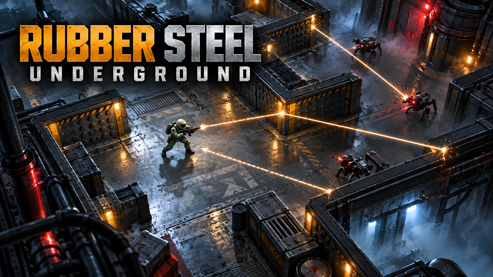

作品概要
RUBBER STEEL UNDERGROUNDは、跳弾の軌道を読みながら地下施設を攻略する見下ろし型ローグライト・アクションシューティングです。自分の弾は時間や反射回数で消えず、敵へ命中するかフロアを移動するまで残ります。装甲敵は最初の命中を反射し、敵を全滅させた後も出口まで残った弾を避ける必要があります。5エリア・50ステージ・各10フロア、全500フロアを収録し、HP 1の緊張感の中で最深部を目指します。
ゲーム / 反射シューティング / アンダーグラウンド
消えない自弾の跳弾を読み、5エリア・全500フロアの地下施設を攻略するローグライト・アクションシューティング。
撃った弾が残り続けるから、敵を倒した後も出口までが戦場になる。射撃と回避、武器と一時能力の選択で最深部を目指します。

RUBBER STEEL UNDERGROUNDは、跳弾の軌道を読みながら地下施設を攻略する見下ろし型ローグライト・アクションシューティングです。自分の弾は時間や反射回数で消えず、敵へ命中するかフロアを移動するまで残ります。装甲敵は最初の命中を反射し、敵を全滅させた後も出口まで残った弾を避ける必要があります。5エリア・50ステージ・各10フロア、全500フロアを収録し、HP 1の緊張感の中で最深部を目指します。
弾を外した時に、その失敗がすぐ消えず、後から自分の行動へ返ってくるシューティングを作りたいという発想から始まりました。敵全滅だけでは安全にならず、出口へ向かう最後まで緊張が残る構成を目指しています。
固定120Hzのシミュレーションと、描画から独立した衝突判定を土台にしています。3種類の武器、4種類のキャラクター、18種類の一時能力を用意し、2・4・6・8フロアの脱出後には3候補から能力を選びます。部屋の形、敵、増援、可動壁や崩落床を組み合わせ、エリアごとに床・照明・アクセントカラーを変化させています。ブラウザーのlocalStorageへ進行状況と設定を保存し、PCのキーボード・マウスとタッチ操作に対応しています。
5エリア・50ステージ・全500フロアを収録したブラウザー版を公開しました。制作物ページからゲームを遊べます。PCではキーボード・マウス、タッチ端末では画面左右のドラッグ操作に対応し、タッチ端末は横向きを推奨します。進行状況は利用するURLとブラウザープロファイルごとに保存されます。
RUBBER STEEL UNDERGROUNDは、撃った弾を忘れられないシューティングです。敵を倒したから終わりではなく、外した一発が出口まで残る。だから撃つ前に少し考えるし、反射もただの派手な演出ではなくなります。地下500フロアを進む中で、撃つ場所と逃げる道を一緒に考える緊張感を楽しんでください。